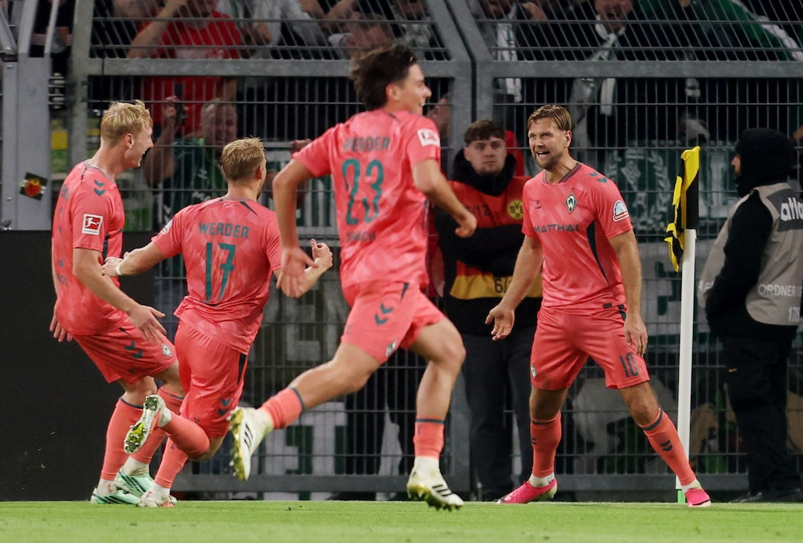
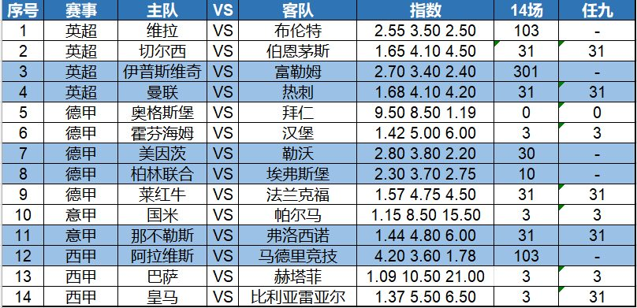

今天14场是英超德甲意甲西甲等，宝哥给大家带来14场和任九初步观点，希望能帮助大家中奖！
火线今天三档：1点日职K联赛等，9点半德甲英超等，晚场五大联赛葡超等！竞盘火线继续约！三档一起订更便宜，包月更优惠！早场小王子带您赢赢赢！
昨晚德甲第5轮，多特主场与不来梅的比赛最后10分钟迎来高潮。斯文松第82分钟和施洛特贝克第85分钟的进球帮助多特2-0领先，但第88分钟雷斯和第92分钟菲尔克鲁格帮助不来梅扳成2-2平，爆出冷门。

法甲第6轮，朗斯主场2-1力克状态不错的里昂。托万助攻梅开二度，索托卡和尤杜进球；里昂只是有替补上场的梅拉扳回1分。
其他场次，马拉加主场1-1艰难战平西班牙人，新赛季继续不胜。英冠场次，西汉姆主场1-1战平巡游者，也是爆出一个不小的冷门。
今天比赛，第一场关注英超第6轮，排名第12的曼联主场迎战垫底的热刺。上赛季打进欧冠联赛的曼联新赛季联赛表现不佳，5轮联赛仅取得1胜2平2负的战绩，主教练卡里克面临着不小的压力。热刺上赛季勉强保级，新赛季5轮联赛2平3负，急需要破除目前的僵局。最近10次交锋，曼联对热刺2胜3平5负处于下风。这让本场比赛曼联主场赢球的压力大增。
另一场比赛，我们关注西甲，皇马主场迎战比利亚雷亚尔。新赛季，穆里尼奥回归，但皇马西甲开局5胜2负，客场不敌马竞技有情可原，但客场0-1不敌贝蒂斯则是有些匪夷所思。比利亚雷亚尔近期以两个2-1先后击败了马拉加和莱万特，取得了一波两连胜，球队状态正在回升。下周中，两队都将参加欧冠联赛，皇马客战罗马，比利亚则是主场迎战那不勒斯，对手都是意甲球队，他们在另一个赛场继续竞争。本场比赛，皇马或有主场不胜的可能。
以下是今天的14场和任九初步观点——

14场：103、31、301、31、0、3、30、10、31、3、31、103、3、3
任九：-、31、-、31、0、3、-、-、31、3、31、-、3、31
欢迎大家收藏宝哥首页，请分享给好友或转发到朋友圈，让更多人看到我。
安卓用户可以下载APP，更便捷看到宝哥每天的动态！